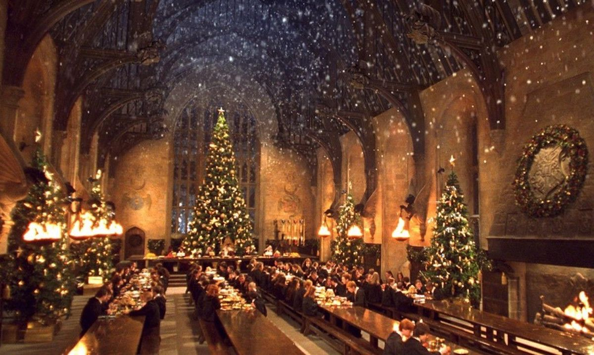
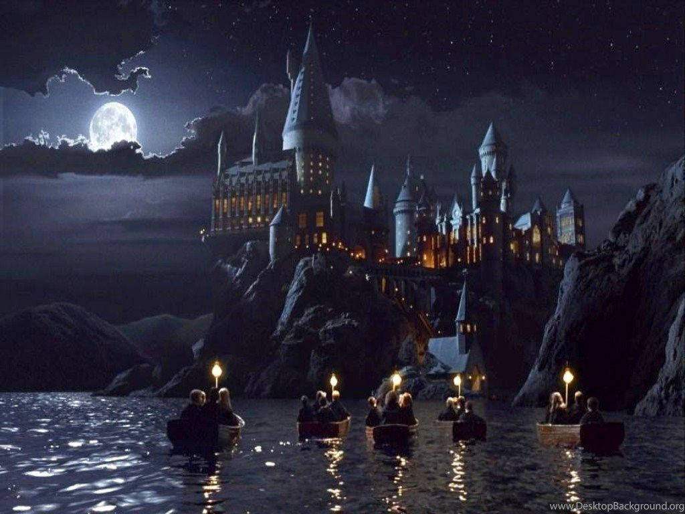
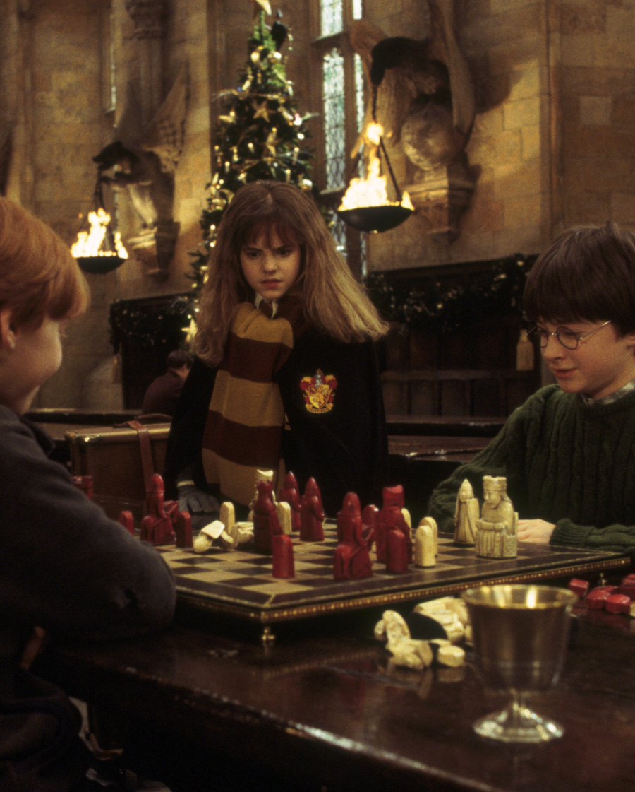
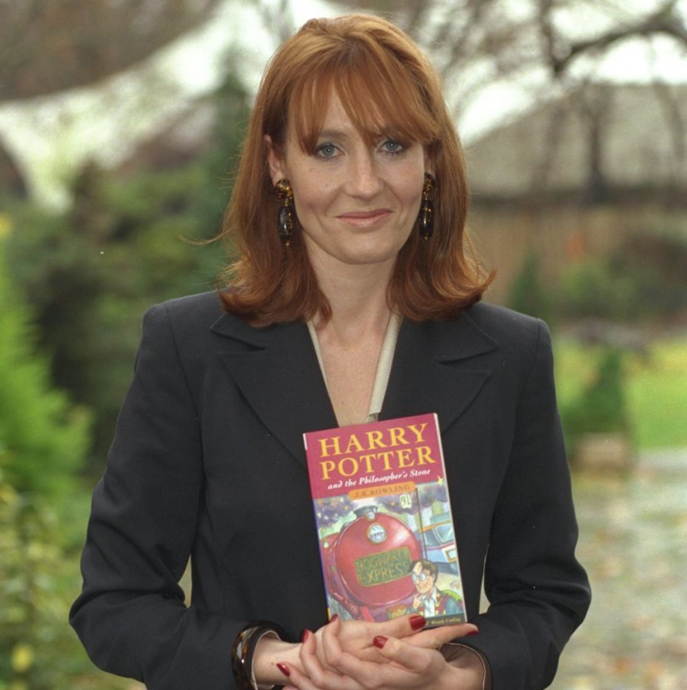
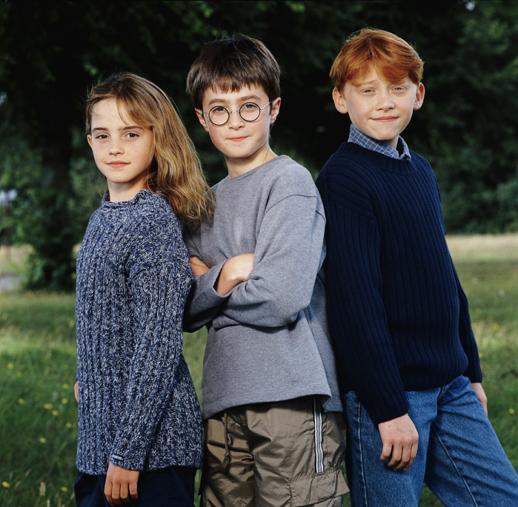

«Гаррі Поттер» — серія з семи фантастичних романів англійської письменниці Джоан Роулінг .
У книгах розповідається про пригоди юного чарівника Гаррі Поттера і його друзів Герміону Ґрейнджер і Рона Візлі, які навчаються у Гоґвортській школі чарів і чаклунства.
Основний сюжет присвячений боротьбі Гаррі проти темного чаклуна лорда Волдеморта, який намірюється стати безсмертним, повалити чаклунський керівний орган званий Міністерством магії і підкорити всіх
чарівників і маґлів (не чарівників).



На історіях про чарівника із блискавкою на чолі виросли цілі покоління дітей, попри те, що книги спалювали за "пропаганду чорної магії".
Після появи серії книг, у Британії суттєво зросла кількість дітей, охочих до навчання у пансіонах та школах-інтернатах. Про все це та багато іншого The Guardian розповіло у добірці
10 фактів
про Гаррі Поттера та всіх причетних до 20-річчя видання першого тексту.
1. Тираж книги "Гаррі Поттер і філософський камінь" у 1997 році налічував лише 500 примірників, 300 з яких одразу потрапили до бібліотек.
За кожну із цих книжок шанувальники і колекціонери готові заплатити £30 000. 2. У книжці "Гаррі Поттер і келих вогню", юний чарівник б'ється на дуелі з Лордом Волдемортом.
Він випадково спричинює те, що паличка темного лицаря починає видавати у зворотньому порядку образи персонажів, яких убив Волдеморт.
Батько Гаррі, Джеймс, з'являється перед його мамою Лілі, якій, згідно з оповіддю, він допомагав втекти і через що загинув. 3. Вихід першої книги про Гаррі Поттера у 1997-му році практично ніхто не помітив.
Того дня люди більше цікавилися обранням прем'єр-міністра Ірландії Берті Агерна, його стосунками із тодшнім прем'єром Великої Британії Тоні Блером, виступом "Spice Girls" та
любовним життям Принцеси Діани. 4. Роулінг задумувала книги так, щоб їхні персонажі росли разом із читачами.
Кожна книга виходила до наступного навчального року, порушуючи глибші та доросліші теми. Наприклад, Міністерство магії протиставляється бюрократизмові Білого дому. 5. За 20 років існування, бестселлери Роулінг стали матеріалом для дослідження у гуманітарній галузі.
Науковці беруться за розробку інтертекстуальності у книгах, намагаються знайти прояви язичницьких поглядів у тексті,
беруться за психоаналіз вчинків персонажів, беруться аналізувати події романів із точки зору Голокосту.  6. У кількох штатах США книги Роулінг спалювали через те, що вони нібито стимулюють дітей займатися чорною магією. "За невинним обличчям ховається натура сатанинської темряви.
Гаррі Поттер – диявол і нам потрібно його знищити", – оголошував під час одного із обрядів спалення пастор Джек Брок у 2001-му році. 7. Джоан Роулінг написала першу книгу будучи самотньою матір'ю, час від часу буваючи у кав'ярні Ніклсона (Nicholson’s cafe) та зачиняючись у задній кімнаті Elephant House в Единбурзі.
Кав'ярня тепер працює як китайський ресторан, а будинок настільки популярний серед туристів, що здається, черги туди тривають вічно. 8. Є три Непрощенних Прокляття – прокльони в арсеналі Пожирачів Смерті. Їх заборонило Міністерство магії у 1717 році. Використання будь-якого з них дорівнює квитку в один кінець до Азкабану.
Це Прокляття Імперіуса ("Імперіо": для контролю над розумом),
Прокляття Круціатуса ("Крусіо": за тортури), і найгірше і найочевидніше – Вбивче Прокляття ("Авада Кедавра"). 9. Захоплення Гаррі Поттером стало такою лихоманкою, що ринок дорослих читачів був величезним. Але вони соромились з’являтись на людях з дитячою книжкою.
Тому у 1998 році з’явилось перше "доросле" видання. Все те саме, просто з більш похмурими обкладинками. 10. Деякі видання тримали у величезній таємниці. Ними неможливо було поділитись навіть з перекладачами на інші мови. У розпал безумства – наприклад, з "Келихом вогню"
– все настільки жорстко охороняли, що перекладачі не отримали своїх копій,
допоки англомовна версія не була в крамницях. Французькі перекладачі працювали командами і без перерви, бачачи, як з кожною наступною годиною англомовна версія пожирає їхні потенційні продажі.
